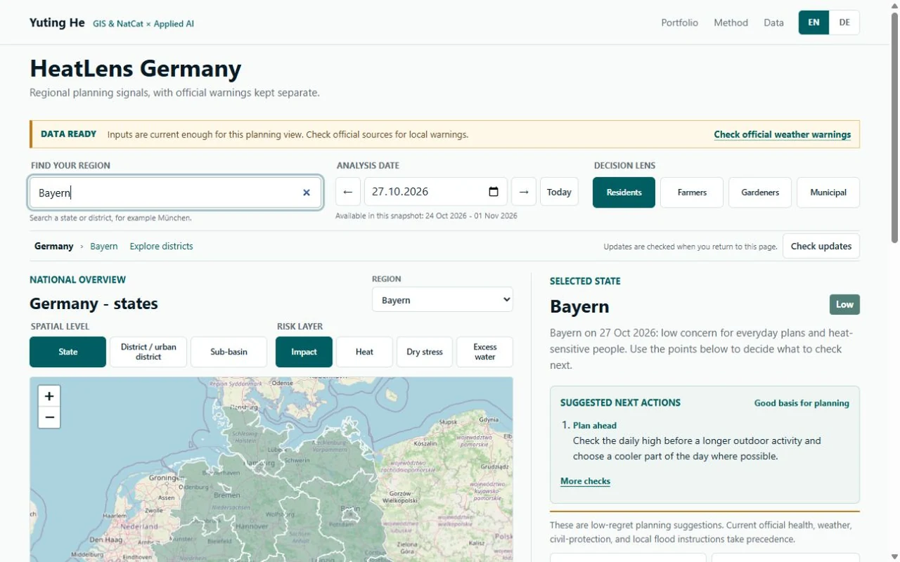

01 / Featured projectJul.–Oct. 2026
HeatLens Germany
From environmental signals to role-specific checks.

- The problem
- Forecasts, soil-water conditions and official warnings are published separately. Their relevance depends on the place, date and person making a decision.
- What I built
- Data ingestion, exact-area spatial aggregation and transparent decision rules, connected to a searchable workbench with four decision lenses and a results-first mobile view.
- How to inspect it
- Explore a region, compare dates, inspect source timestamps and export a snapshot. Versioned regional data loads on demand; automated checks cover consistency, freshness and failure recovery.
- 614
- Basin prediction units
- 400
- District response regions
- 16
- State summaries
- 9 days
- Two past + seven forecast dates
Decision boundary. Scores are uncalibrated screening indices. Basin indicators are not local measurements; official warnings and local verification remain essential.